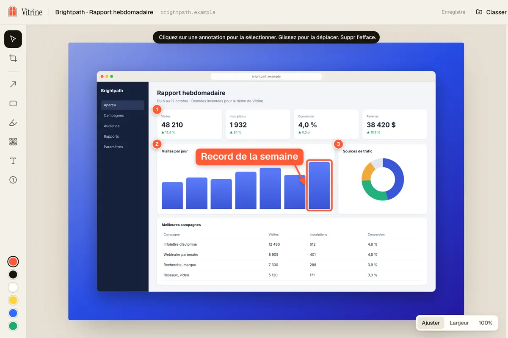
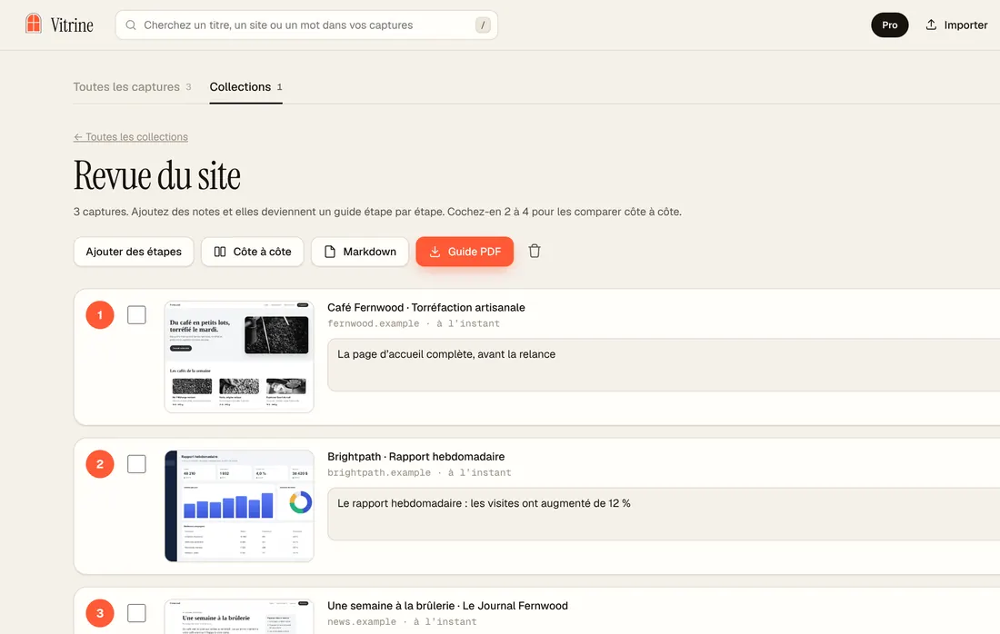

Capture d’écran de page entière en PDF dans Chrome
Vérifié le 4 novembre 2026. Écrit pour Vitrine 1.2.2.
« Capture d’écran de page entière en PDF » peut vouloir dire deux choses. Certains veulent un document : du vrai texte que l’on peut sélectionner et chercher. D’autres veulent une image de la page telle qu’ils la voient, enregistrée en PDF. Chrome peut faire la première seul. Pour la seconde, il faut une capture. Voici les façons, et ce que chacune donne.
Façon 1 : imprimer en PDF (un document)
- Ouvrez la page.
- Appuyez sur Ctrl + P (Windows) ou Cmd + P (Mac).
- Réglez la destination sur l’option d’enregistrement en PDF (Save as PDF en anglais).
- Ouvrez les paramètres supplémentaires (More settings). Choisissez un format de papier, réduisez les marges au minimum (ou à aucune), et cochez l’option des graphiques d’arrière-plan (Background graphics) pour garder les couleurs et les images.
- Cliquez sur le bouton d’enregistrement.
Vous obtenez un PDF en pages, avec du vrai texte. C’est sa force : on peut y sélectionner, chercher et copier. Le prix à payer : la page est découpée en feuilles, et beaucoup de sites passent à une autre mise en page à l’impression, si bien que le résultat peut ne pas ressembler à l’écran. Des menus et des bandeaux peuvent manquer, ou gêner. Si le bord droit est coupé, diminuez l’échelle dans les paramètres supplémentaires.
Façon 2 : faire une capture, puis en faire un PDF
- Capturez toute la page en une seule image. Dans Chrome, ouvrez les outils de développement (F12 sous Windows, Cmd + Option + I sur Mac), appuyez sur Ctrl + Maj + P (Cmd + Maj + P sur Mac) et choisissez la commande Capture full size screenshot (son nom peut différer si vos outils sont en français). Voyez capture d’écran de page entière dans Chrome.
- Vous obtenez un PNG dans Téléchargements. Convertissez-le avec n’importe quel outil d’image en PDF ou avec la fenêtre d’impression de votre ordinateur.
Vous gardez l’apparence exacte de la page. Le prix : deux étapes, et les mêmes limites que toute capture simple : les bandeaux, fenêtres surgissantes et publicités sont dans l’image, et une image très haute peut devenir une seule page de PDF démesurée.
Façon 3 : Vitrine, de la capture directement au PDF
Vitrine est une extension Chrome gratuite. La capture et le PDF forment un seul parcours.
- Ajoutez Vitrine depuis le Chrome Web Store et épinglez-la.
- Ouvrez la page. Appuyez sur Alt + Maj + S (Windows) ou Option + Maj + S (Mac). Vitrine fait défiler toute la page, charge les images différées et masque les bandeaux de témoins, bulles de clavardage, fenêtres surgissantes et publicités pour la prise de vue.
- Le Studio s’ouvre. Encadrez l’image, ajoutez des flèches ou du flou si vous le voulez.
- À côté du bouton Télécharger, choisissez PDF (les autres choix sont PNG et JPG).
- Cliquez sur Télécharger. Le PDF arrive dans votre dossier Téléchargements.

À quoi ressemble le PDF
- C’est une image de la page, telle que vous l’avez vue, pas un document texte. Le texte n’y est pas sélectionnable et les liens ne sont pas cliquables.
- Une capture beaucoup plus haute que large est découpée en pages de forme A4, pour bien s’imprimer. Une capture plus courte reste sur une seule page.
- Les pages trop hautes pour une seule image nette sont aussi gardées en pages nettes. Vous pouvez les enregistrer en ZIP, ou en PDF (« PDF net »).
- Il reste sur votre ordinateur. Aucun téléversement, aucun compte.

Si vous voulez un mode d’emploi, Vitrine peut aussi enregistrer un guide étape par étape : chaque capture devient une étape numérotée avec une note, et vous exportez un PDF ou du Markdown. Les guides gratuits portent une petite mention « Fait avec Vitrine », que Pro retire.
Quelle façon choisir?
- Un article ou un reçu à chercher et à citer : l’impression en PDF.
- Une page qui doit ressembler exactement à l’écran, comme une revue de conception, une épreuve pour un client ou la trace de ce qu’une page disait : une capture enregistrée en PDF.
- Les deux, ou souvent : la façon 1 pour le texte et la façon 3 pour l’apparence.
Le tampon de preuve de Vitrine, une fonction Pro, ajoute le lien source et la date de capture sous l’image, ce qui aide quand le PDF sert de trace.
Ce que ça coûte
Capturer, copier et exporter en PNG, JPG et PDF est gratuit, pour de bon. Pro coûte 24 $ US une seule fois, sans abonnement. Le prix de lancement est de 19 $ US jusqu’au 30 novembre 2026. Voyez la comparaison des prix et l’accueil de Vitrine.
À lire aussi : capture d’écran de page entière dans Chrome.